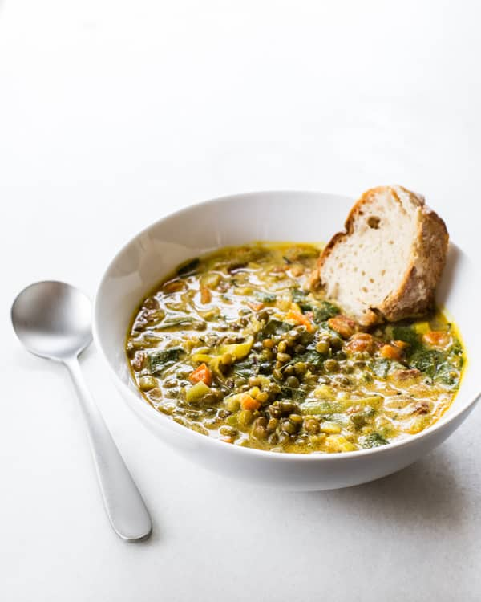

Lentil stew

Ingredients
- 1 onion
- 2 carrots
- 1 garlic
- 3 tablespoons oil
- salt, pepper
- 1 cup dried lentils
- Stir onion on oil until yellow
- Add chopped carrots and a garlic
- Separately cook lentil for 20 minutes until cooked
- Put cooked lentils together with onion and carrots and mix well
- Season according to the flawor
Back to recipes